Analiza rješenja · JOI Spring Camp 2024 · Dan 1
Špijun 3
O ovom članku
Tekst je prijevod službene japanske prezentacije rješenja, preoblikovan u članak. Slajdovi su ugrađeni kao slike; natpis pod svakim slajdom je prijevod teksta na njemu. Dijelovi označeni kao trenerska napomena nisu u izvornoj prezentaciji — dodani su da popune korake koje slajdovi preskaču ili samo skiciraju.
Slajdovi
Zadatak
izvorni slajdovi 1–4
-
1Naslov; analiza: Hoshii Tomohito. -
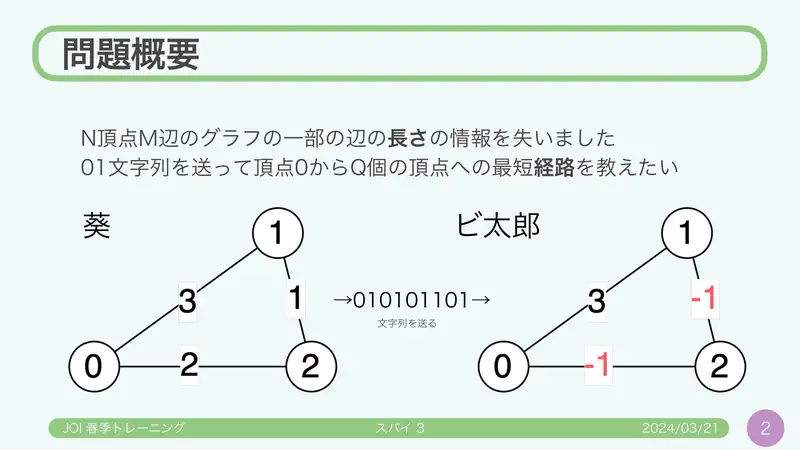
2Graf s $N$ vrhova i $M$ bridova; izgubljene duljine nekih bridova; nizom 0/1 prenijeti najkraće puteve do $Q$ vrhova. -
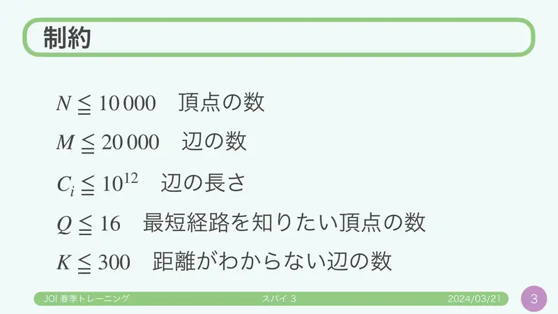
3Ograničenja: $N\le10^4$, $M\le2\cdot10^4$, $C_i\le10^{12}$, $Q\le16$, $K\le300$. -
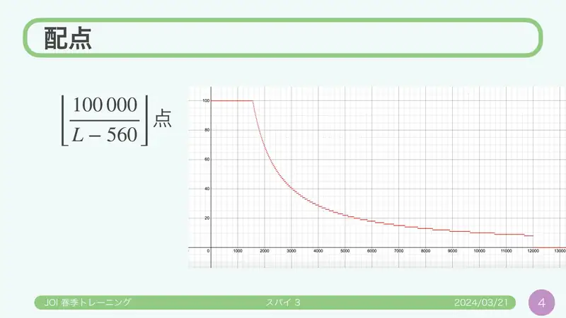
4Bodovanje $\lfloor 100\,000/(L-560)\rfloor$.
← → tipke ili klik na sliku
Polazne ideje
Koraci algoritma
Od 12 000 do 4 800
izvorni slajdovi 5–8
-
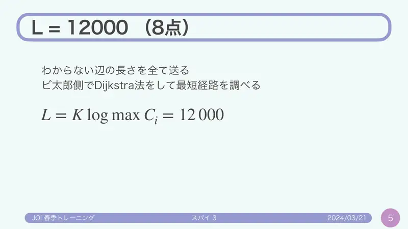
5$L=12\,000$ (8): pošalji sve izgubljene duljine ($K\log\max C$); Bitaro pusti Dijkstru. -
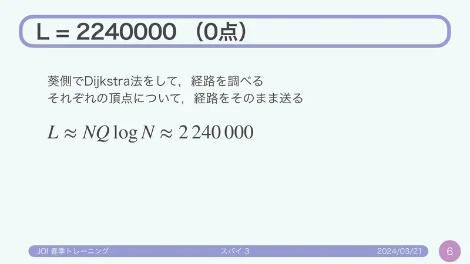
6$L\approx 2\,240\,000$ (0): Aoi pošalje cijele puteve ($NQ\log N$). -
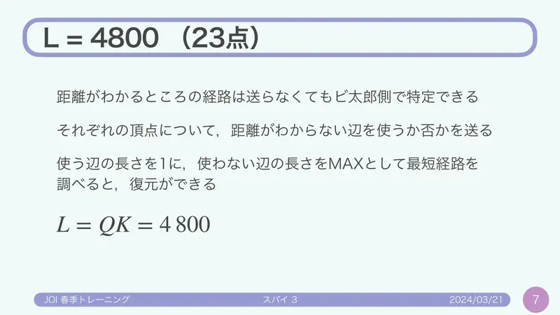
7$L=4\,800$ (23): za svaki upit i svaku izgubljenu cestu bit „koristi se”; Bitaro korištenima da duljinu 1, ostalima MAX, pa Dijkstra rekonstruira put. $L=QK$. -
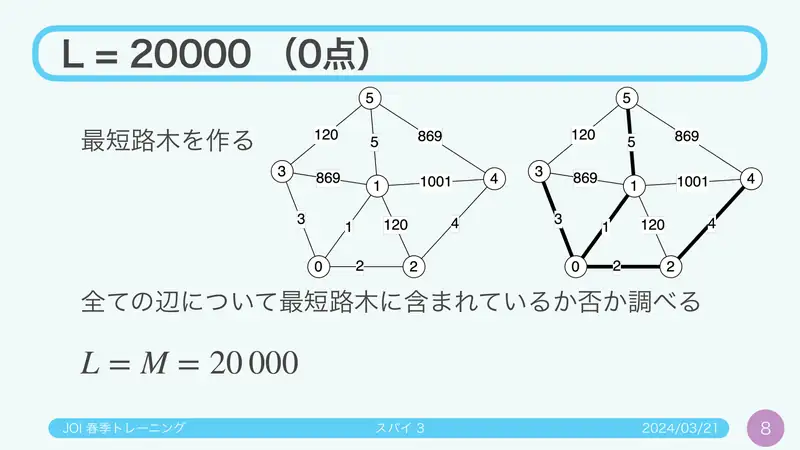
8$L=20\,000$ (0): za svaki od $M$ bridova je li u stablu najkraćih puteva.
← → tipke ili klik na sliku
Intervali na stablu 53 boda
Koraci algoritma
DFS-redoslijed
izvorni slajdovi 9–12
-
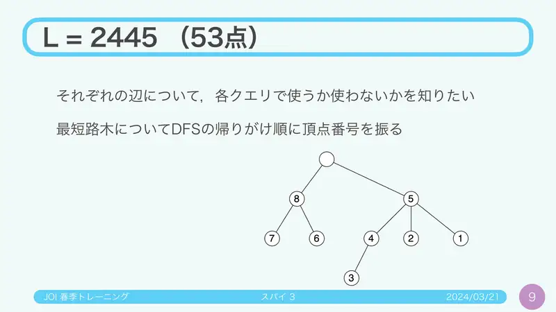
9Za svaku cestu želimo znati koji je upiti koriste. Stablo najkraćih puteva; vrhove numeriraj DFS post-redoslijedom. -
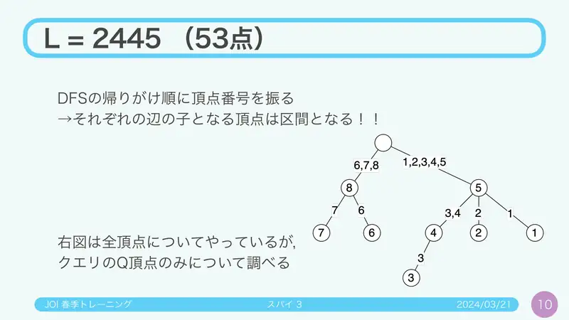
10Podstablo ispod svake ceste postaje interval brojeva! Gledaj samo $Q$ upitnih vrhova. -
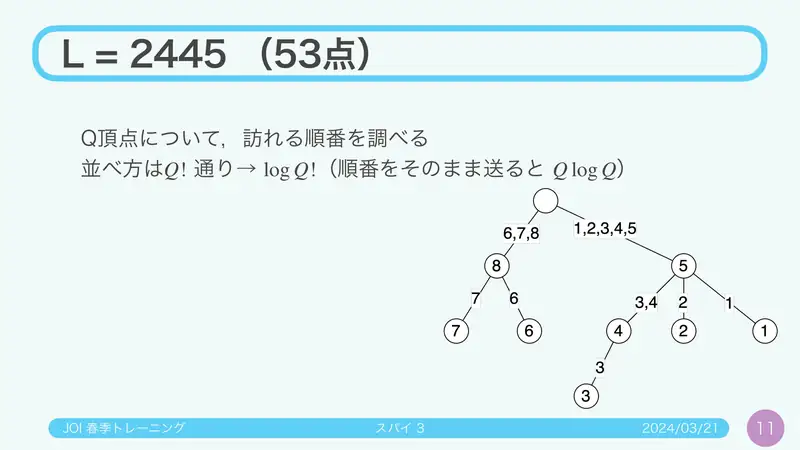
11Pošalji redoslijed posjeta upitnih vrhova: $Q!$ permutacija → $\log Q!$ bitova (izravno $Q\log Q$). -
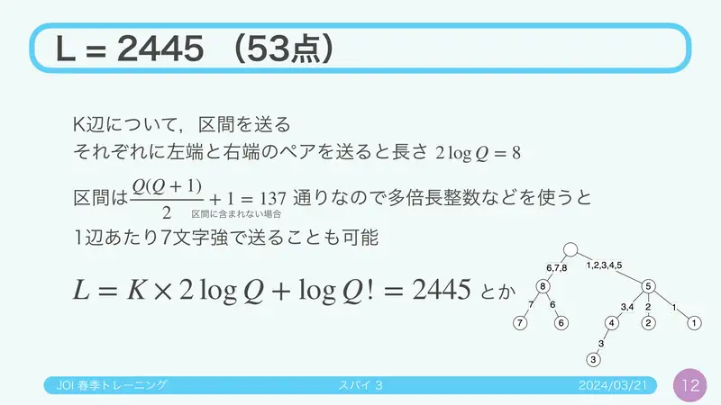
12Za svaku od $K$ cesta interval (par krajeva: $2\log Q = 8$ bitova; intervala je $Q(Q+1)/2+1 = 137$, pa velikim brojem oko 7.1 bita). $L = K\cdot2\log Q + \log Q! = 2\,445$.
← → tipke ili klik na sliku
Laminarnost 90 bodova
Koraci algoritma
Samo 32 intervala
izvorni slajdovi 13–15
-
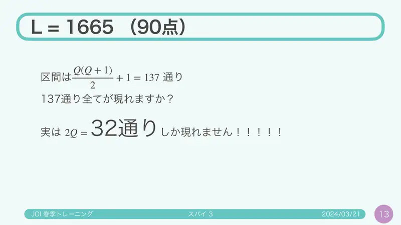
13Od 137 intervala pojavljuje ih se najviše $2Q=32$! -
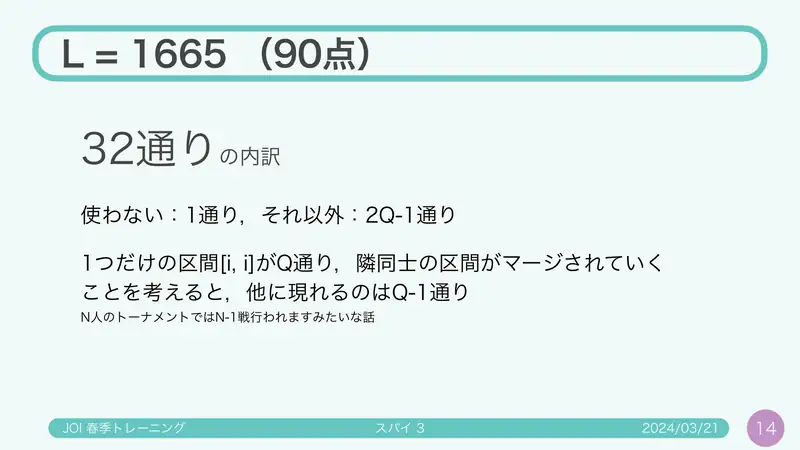
14Raspored: „ne koristi se” 1, ostalo $2Q-1$: $Q$ jednočlanih $[i,i]$, a spajanjem susjednih nastaje još najviše $Q-1$ — kao turnir: $N$ igrača, $N-1$ mečeva. -
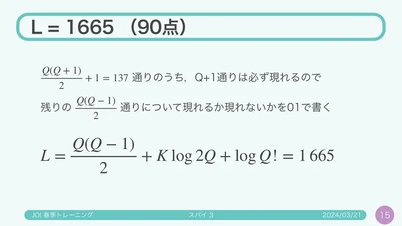
15$Q+1$ uvijek dopušteno; za ostalih $Q(Q-1)/2$ pošalji bit pojavljuje li se. $L = Q(Q-1)/2 + K\log 2Q + \log Q! = 1\,665$.
← → tipke ili klik na sliku
Pomoćno stablo 100 bodova
Koraci algoritma
Binarno stablo s označenim listovima
izvorni slajdovi 16–20
-
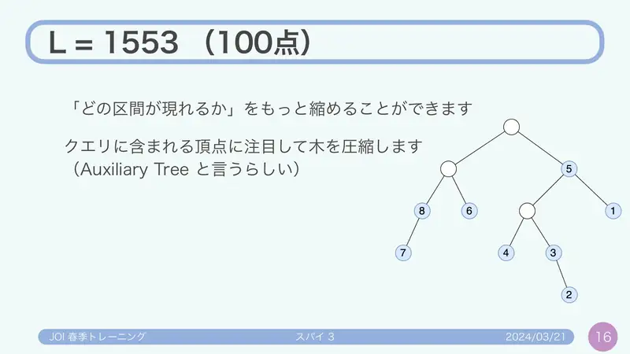
16„Koji intervali postoje” može se sažeti: kompresiraj stablo na upitne vrhove (pomoćno / virtualno stablo). -
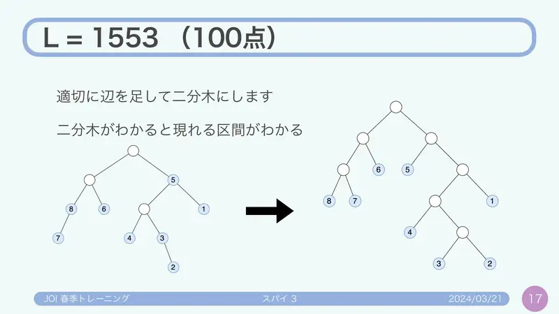
17Dodaj bridove da postane binarno; iz binarnog stabla čitaju se svi intervali. -
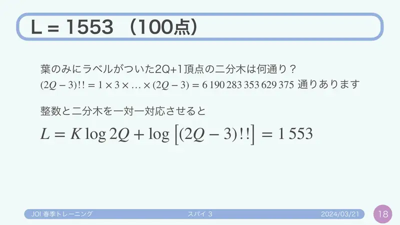
18Binarnih stabala s $Q$ označenih listova ima $(2Q-3)!! = 1\cdot3\cdots(2Q-3) = 6\,190\,283\,353\,629\,375$. Bijekcija s cijelim brojem: $L = K\log 2Q + \log(2Q-3)!! = 1\,553$. -
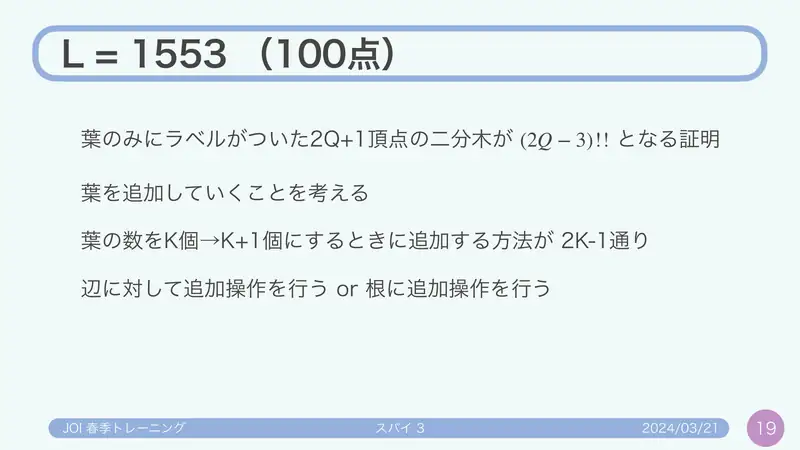
19Dokaz: dodavaj listove; s $k$ listova novi list ide na jedan od $2k-1$ bridova (uključivo „iznad korijena”). -
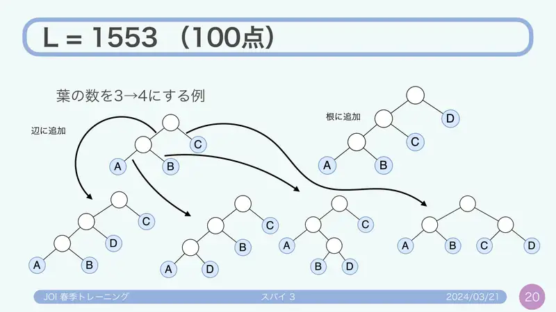
20Primjer $3\to4$ lista: dodavanje u korijen ili na brid.
← → tipke ili klik na sliku
Slajdovi
Statistika
izvorni slajdovi 21–22
-
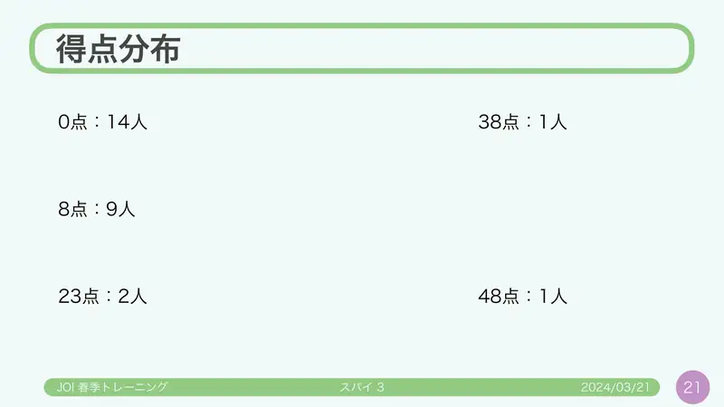
21Raspodjela: 0: 14; 8: 9; 23: 2; 38: 1; 48: 1. -
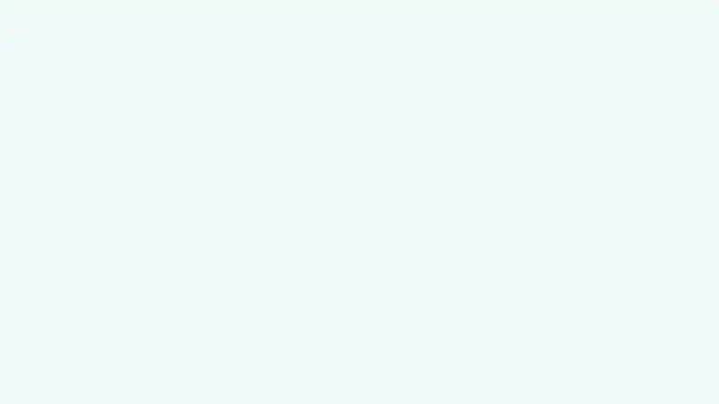
22(prazno)
← → tipke ili klik na sliku
Bonus: 1350 bitova
Koraci algoritma
Rješenje tutora
izvorni slajdovi 23–26
-
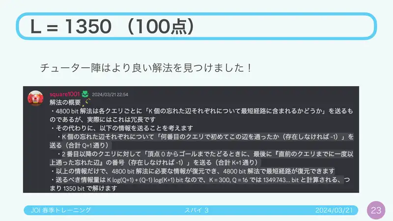
23Tutori su našli bolje rješenje: $L=1\,350$. -
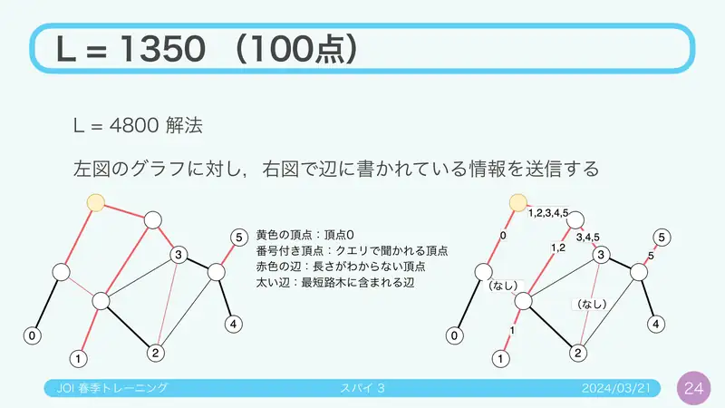
24Podsjetnik na $L=4800$: žuti vrh je 0, numerirani su upitni, crvene ceste izgubljene, debele u stablu najkraćih puteva; uz svaki brid piše koji ga upiti koriste. -
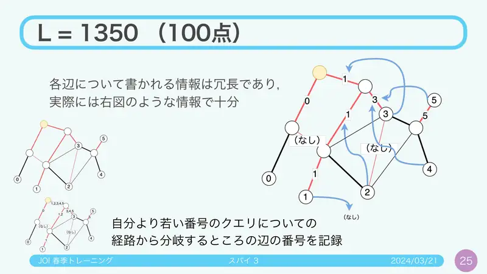
25Ta je informacija redundantna; dovoljno je: za upit zapisati cestu na kojoj se odvaja od puteva upita s manjim indeksom. -
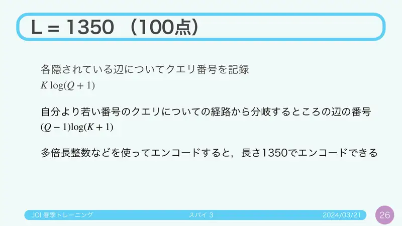
26Za svaku izgubljenu cestu zapiši indeks upita ($K\log(Q+1)$), za svaki upit brid odvajanja ($(Q-1)\log(K+1)$); velikim brojem ukupno 1350.
← → tipke ili klik na sliku
Sažetak
- Bitaru trebaju samo skupovi izgubljenih cesta na putevima; ostalo rekonstruira Dijkstrom s 0/$\infty$.
- Skupovi su podstabla stabla najkraćih puteva → laminarni → binarno stablo s $Q$ označenih listova ($(2Q-3)!!$) + 5 bitova po cesti: 1553.
- Još bolje (1350): po cesti najmanji upit koji je koristi, po upitu mjesto odvajanja.